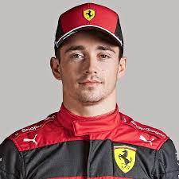

homeMonaco
location_onMonte Carlo
phone123456789
Charles Leclerc
F1 Driver
Formula 1 Driver for Scuderia Ferrari | GP3 Champion 2016 | Formula 2 Champion of 2017
Skills
Driving
Reflexes
Stamina
Confidence
Mech Knowledge
about me
Charles Marc Hervé Perceval Leclerc is a Monégasque racing driver, currently racing in Formula One for Scuderia Ferrari. He won the GP3 Series championship in 2016 and the FIA Formula 2 Championship in 2017. Leclerc made his Formula One debut in 2018 for Sauber, a team affiliated with Ferrari, for which he was part of the Ferrari Driver Academy. With Sauber having finished last the year before, Leclerc led the charge to improve its finishing position in the constructors' championship to eighth, and was the higher ranked of the two Sauber drivers. He joined Ferrari the next season and became the second-youngest driver to qualify on pole position in Formula One at the 2019 Bahrain Grand Prix. The 2019 season also saw Leclerc take his first career win in Belgium. He won the FIA Pole Trophy for most pole positions in the 2019 season, becoming the youngest driver to win it.education
School Albert De Monaco
2005–2009
Ferrari Driving Academy
2009–2013
Monaco School of Arts
2013–2015
Experience
Karting
2005–2013
Formula Renault, Formula Three, and GP3
2014–2016
FIA Formula 2 Championship
2017–2018
F1 driver for Sauber
2018–2019
F1 driver for Ferrari
2019–present